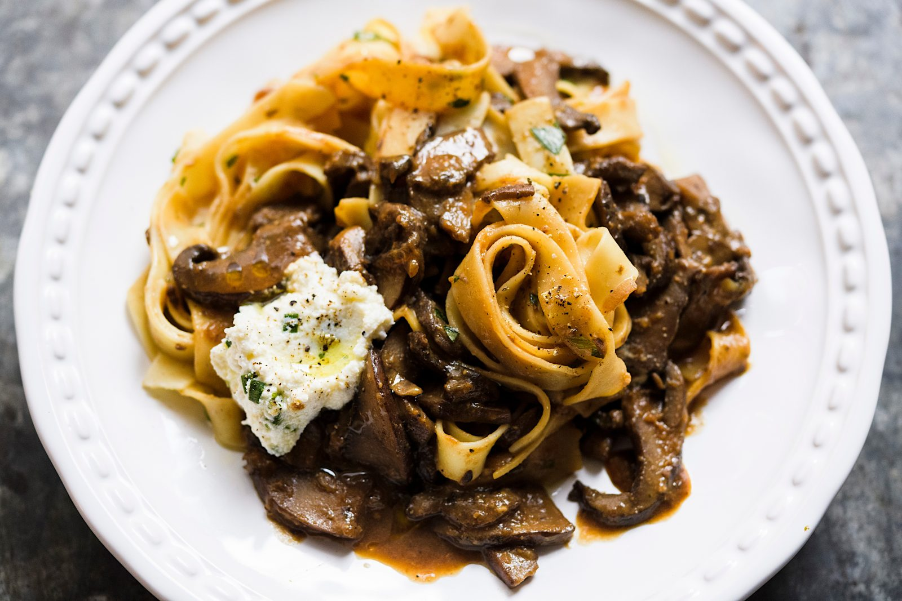

Tagliatelle with Portabellos

Description
In this hearty vegetarian dish, an umami-rich mushroom sauce combines
with tarragon-tossed tagliatelle pasta. Red miso and mild portobellos
ground the flavors in earthy richness that contrasts well with a
finishing spoonful of chive-seasoned ricotta cheese. Tagliatelle is an
egg noodle similar in shape to fettuccine, but with a finer texture and
richer flavor. We used dried tagliatelle, which is sold bundled in nests.
Refer to the package directions for cooking times.
Ingredients
- 1 cup whole-milk ricotta cheese
- ¼ cup finely chopped fresh chives
- Kosher salt and ground black pepper
- 8 ounces dried tagliatelle
- 4 tablespoons (½ stick) salted butter, divided
- 2 pounds portobello mushroom caps, gills removed, quartered and sliced ¼ inch thick
- 2 medium shallots, halved and thinly sliced
- 1 cup dry white wine
- 3 tablespoons red miso
- ½ cup lightly packed fresh tarragon, finely chopped
- Extra-virgin olive oil, to serve
Steps
-
In a small bowl, whisk together the ricotta, chives and ¼ teaspoon
each salt and pepper. Set aside. In a large pot, bring 4 quarts of
water to a boil. Add the pasta and 2 tablespoons salt and cook until
al dente. Reserve 2 cups of the cooking water, drain the pasta and
return it to the pot. Add 1 tablespoon of the butter and ½ cup of
the reserved cooking water; toss to coat.
-
Meanwhile, in a 12-inch skillet over medium-high, heat 2 tablespoons
of the butter until foaming. Add the mushrooms, shallots and ¼ teaspoon
each salt and pepper. Cook, stirring, until the mushrooms have released
their moisture and are well browned, about 10 minutes. Add the wine,
scrape up any browned bits and simmer until almost evaporated, about
5 minutes.
-
Add the remaining 1½ cups reserved cooking water, bring to a simmer and
cook over medium-high until the mixture has thickened, about 10 minutes.
Off heat, stir in the miso and remaining 1 tablespoon butter. Taste and
season with salt and pepper.
-
Add the tarragon to the pasta and toss, then transfer to a serving bowl.
Spoon the mushroom mixture over the pasta. Serve dolloped with the
ricotta mixture and drizzled with olive oil.